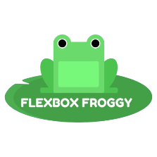
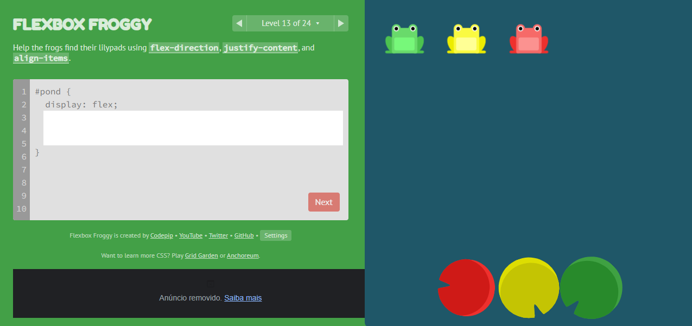
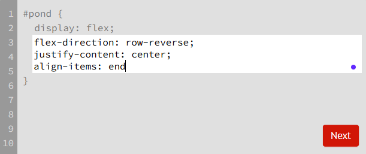
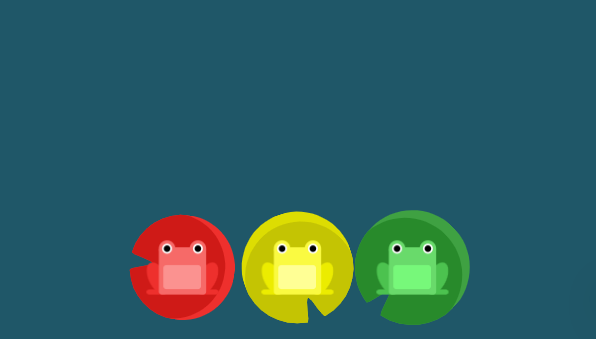
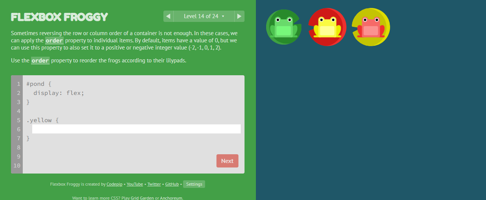
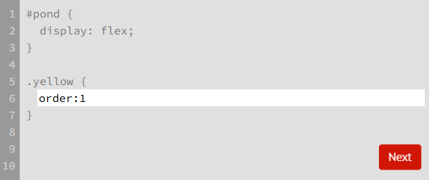
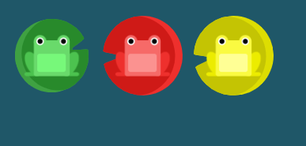

O Flexbox Froggy é um jogo online e gratuito criado por Thomas Park para ensinar o funcionamento do CSS Flexbox de forma divertida e interativa.
"O Flexbox também é um tema bom pois iniciantes podem aprender essa forma aprimorada de posicionamento logo de cara, e muitos desenvolvedores web experientes que ainda não o conhecem podem finalmente começar a utilizá-lo. É algo que eu mesmo pretendo aprender há algum tempo. Existem tutoriais de excelente qualidade para esse fim, como os do CSS Tricks, Codrops e Scotch.io, mas poucas experiências de aprendizado interativo."
(Thomas Park, 2015)

O nível 13 de Flexbox Froggy requer quep jogador utilize uma combinação de flex-direction, justify-content e align-items para fazer com que os sapos se posicionem na vitória-régia de sua cor.
solução

Para entender a solução, devemos analisar linha por linha:
flex-direction: row-reverse → Define a direção do eixo principal na horizontal e inverte a ordem dos elementos (da direita para a esquerda).justify-content: center → Alinha os elementos no centro do eixo principal. Como a direção foi definida como linha invetida (row-reverse), o eixo principal é na horizontal. align-items: end → Alinha os elementos no final do eixo transversal, que nesse caso é verticalmente.
Utilizando esse código, a solução do nível é a seguinte:


O nível 14 de Flexbox Froggy requer quep jogador utilize o comando order para fazer com que os sapos se posicionem na vitória-régia de sua cor.
solução

Para entender a solução, devemos analisar linha por linha:
order: 1 → Por padrão, os elementos tem valor 0, mas usando a propriedade ordem, é possível alterar isso. Nesse caso, como o sapo verde e vermelho tem valor 0, alterar o valor do sapo amarelo para qualquer valor maior que zero faz com que ele se posicione depois dos dois outros sapos.Utilizando esse código, a solução do nível é a seguinte:
